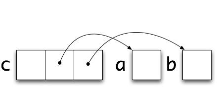
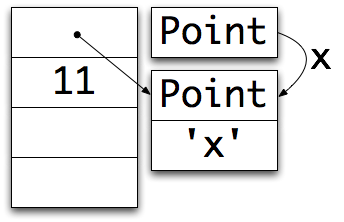
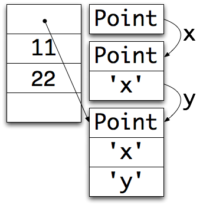
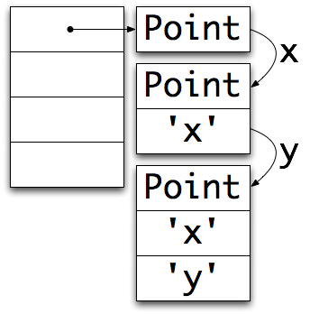
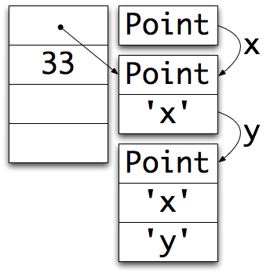
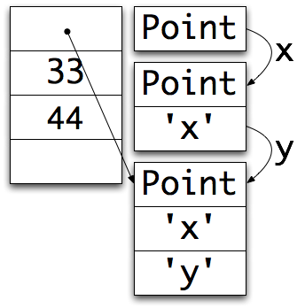
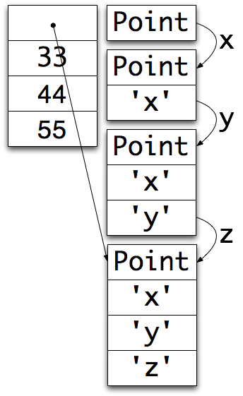
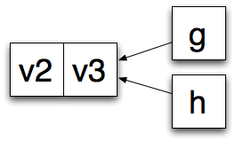

Understanding V8
Vyacheslav Egorov
navigate with cursor keys ←→ or space bar
nodecampeu 2011
Vyacheslav Egorov
| data length | \u0000 | data bytes |
| 1 | 1 | \u0000 | n | o | d | e | c | a | m | p | . | e | u |
Parser.prototype.parse = function (s) {
var l = '';
for (var i = 0; i < s.length; i++) {
if (s[i] == '\u0000') {
l = Number(l);
this.emit('data', s.substr(i + 1, l));
return this.parse(s.substr(i + 1 + l));
} else {
l += s[i];
}
}
return s;
};
function makeFakePacket() {
var l = randomBetween(MIN_PACKET_LENGTH,
MAX_PACKET_LENGTH);
var p = l + '\u0000';
for (var i = 0; i < l; ++i) p += ' ';
return p;
}
var fakeInput = '';
for (var i = 0; i < NOF_PACKETS; i++) {
fakeInput += makeFakePacket();
}
var p = new Parser();
var start = Date.now();
for (var j = 0; j < NOF_RUNS; j++) {
p.parse(fakeInput);
}
var end = Date.now();
var timeSpent = end - start;
var totalBytes = fakeInput.length * NOF_RUNS;
console.log(timeSpent + ' ms');
console.log(totalBytes/timeSpent + ' bytes/ms');
var MIN_PACKET_LENGTH = 10; var MAX_PACKET_LENGTH = 100; var NOF_PACKETS = 1000; var NOF_RUNS = 10;
% node parser.js 806 ms 711.4267990074442 bytes/ms
% node --prof parser.js
806 ms
711.4267990074442 bytes/ms
Builtin sampling profiler
% node --prof parser.js
806 ms
711.4267990074442 bytes/ms
% deps/v8/tools/mac-tick-processor
[GC]:
ticks total nonlib name
576 79.0%
GC cost is proportional to the number of long lived objects
Parser.prototype.parse = function (s) {
var l = '';
for (var i = 0; i < s.length; i++) {
if (s[i] == '\u0000') {
l = Number(l);
this.emit('data', s.substr(i + 1, l));
return this.parse(s.substr(i + 1 + l));
} else {
l += s[i];
}
}
return s;
};
Parser.prototype.parse = function (s) {
var l = '';
for (var i = 0; i < s.length; i++) {
if (s[i] == '\u0000') {
l = Number(l);
this.emit('data', s.substr(i + 1, l)); s = s.substr(i + 1 + l);
i = 0;
l = ''; } else {
l += s[i];
}
}
return s;
};
% node --prof parser.js
183 ms
3133.3879781420765 bytes/ms
% deps/v8/tools/mac-tick-processor
[JavaScript]:
ticks total nonlib name
124 64.2% 87.3% Stub: SubString
[GC]:
ticks total nonlib name
8 4.1%
c = a + b

Don't mix indexing and concatenation
while (smth) {
s = s + s.substr(x, y);
}
Use arrays instead.
Substring cost is proportional to it's length
Parser.prototype.parse = function (s) {
var l = '';
for (var i = 0; i < s.length; i++) {
if (s[i] == '\u0000') {
l = Number(l);
this.emit('data', s.substr(i + 1, l)); s = s.substr(i + 1 + l);
i = 0; l = '';
} else {
l += s[i];
}
}
return s;
};
Parser.prototype.parse = function (s) {
var l = '', j = 0;
for (var i = 0; i < s.length; i++) {
if (s[i] == '\u0000') {
l = Number(l);
this.emit('data', s.substr(i + 1, l)); i += l;
j = i + 1; l = '';
} else {
l += s[i];
}
} return s.substr(j);};
% node --prof parser.js
6 ms
95568.33333333333 bytes/ms
% deps/v8/tools/mac-tick-processor [JavaScript]: 4 9.8% 9.8% Stub: StringAdd
% node --prof parser.js
6 ms
95568.33333333333 bytes/ms
% deps/v8/tools/mac-tick-processor [JavaScript]: 4 9.8% 9.8% Stub: StringAdd
% node --prof parser.js
194 ms
295572.1649484536 bytes/ms
% deps/v8/tools/mac-tick-processor [JavaScript]:47 20.4% 20.4% LazyCompile: *Parser.parse33 14.3% 14.3% Stub: SubString 21 9.1% 9.1% LazyCompile: *substr native 14 6.1% 6.1% LazyCompile: ~ToNumber native 14 6.1% 6.1% LazyCompile: b native 12 5.2% 5.2% Stub: StringAdd
Parser.parse
String.substr
makeFakePacket
randomBetween
Parser.parse
String.substr
makeFakePacket
randomBetween
*Parser.parse
*String.substr
makeFakePacket
randomBetween
--trace-opt
log names of optimized functions to stdout
Not all constructs are supported by optimizing compiler
--trace-bailout
log optimizing compiler bailouts
Optimizations are:
--trace-deopt
log deoptimizations
% node --prof parser.js
194 ms
295572.1649484536 bytes/ms
% deps/v8/tools/mac-tick-processor [JavaScript]: 47 20.4% 20.4% LazyCompile: *Parser.parse 33 14.3% 14.3% Stub: SubString 21 9.1% 9.1% LazyCompile: *substr native 14 6.1% 6.1% LazyCompile: ~ToNumber native 14 6.1% 6.1% LazyCompile: b native12 5.2% 5.2% Stub: StringAdd
Parser.prototype.parse = function (s) {
var l = '', j = 0;
for (var i = 0; i < s.length; i++) {
if (s[i] == '\u0000') { l = Number(l); this.emit('data', s.substr(i + 1, l));
i += l;
j = i + 1;
l = '';
} else { l += s[i]; }
}
return s.substr(j);
};
Parser.prototype.parse = function (s) { var l = 0, j = 0, ch0 = "0".charCodeAt(0); for (var i = 0; i < s.length; i++) { var ch = s.charCodeAt(i);
if (ch === 0) { this.emit('data', s.substr(i + 1, l));
i += l;
j = i + 1; l = 0; } else { l = l * 10 + (ch - ch0); }
}
return s.substr(j);
};
% node parser.js 125 ms 458728 bytes/ms
% node parser.js 806 ms 711.4267990074442 bytes/ms

Use WebGL typed arrays
Float32Array
Float64Array
|
function Point(x, y) {
|
function Point(x, y) {
this.x = x;
|
 |
function Point(x, y) {
this.x = x;
this.y = y;
|
 |
|
function Point(x, y) {
|
 |
function Point(x, y) {
this.x = x;
|
 |
function Point(x, y) {
this.x = x;
this.y = y;
|
 |
function Point(x, y) {
this.x = x;
this.y = y;
}
var p1 = new Point(11, 22);
var p2 = new Point(33, 44);
p2.z = 55;
|
 |
v = obj.x
v = Runtime_GetProperty(obj, 'x');
function Runtime_GetProperty(obj, f) {
var clazz = HiddenClass(obj);
return obj[clazz.IndexOfField(f)];
}
v = obj.x
if (HiddenClass(obj) == cache.clazz) {
v = obj[cache.index];
} else {
v = Runtime_LoadCache_Miss(cache, obj, 'x');
}
function Runtime_LoadCache_Miss(cache, obj, f) {
var clazz = HiddenClass(obj);
var index = clazz.IndexOfField(f);
cache.clazz = clazz;
cache.index = index;
return obj[index];
}
Monomorphic sites are better than polymorphic
delete obj.prop
Object.seal(obj)
Object.freeze(obj)
obj.__defineGetter__(...)
obj.__defineSetter__(...)
Object.defineProperty(obj, ...)
obj = { get prop () { }, set prop() { } }
arguments objectarguments.length arguments[i] f.apply(obj, arguments)
function f() {
var v1; // real local variable
var v2; // context allocated
var v3; // context allocated
function g() { use(v2); }
function h() { use(v3); }
}

Contexts are created eagerly
function foo(arg1, arg2, arg3) {
/* V8 allocates context, copies arg2 to it */
if (almostAlwaysFalse()) {
return function () { return arg2; }
}
/* Context is not used */
}
Avoid global eval
Function constructorAvoid with
try {} catch (e) {} for nowAvoid const
Thank you!
Questions?